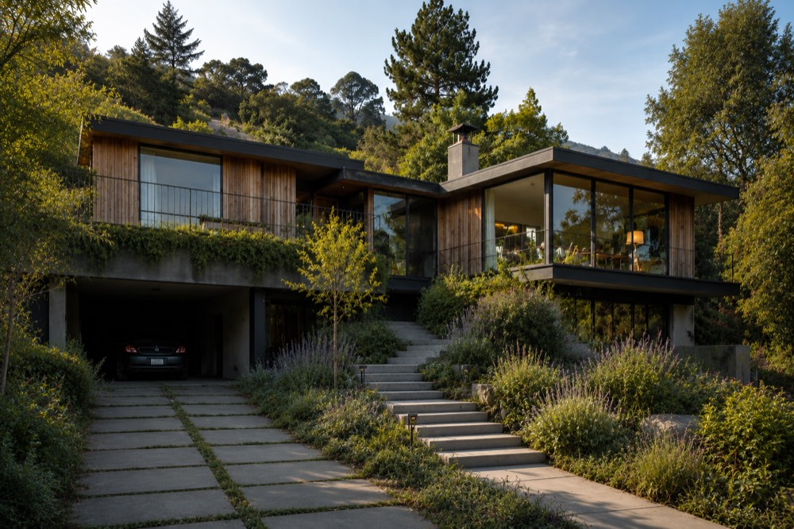
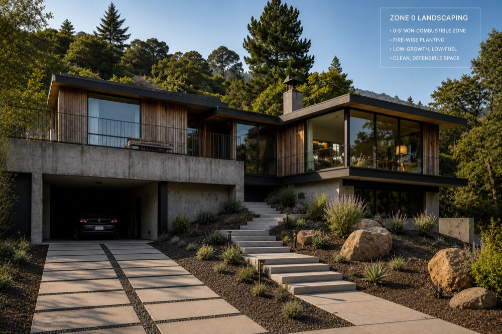

Fire-Adapted Hardscape
Decomposed granite, flagstone, and metal edging create clean perimeter buffers that stop ground fire cold.
Gravel & DG Options →Modern Design. Naturally Resilient. Fire-Adapted.
Protect your East Bay home from wildfire risk without turning your yard into a barren gravel pit. We redesign the critical 5-foot zone using fire-adapted materials that look intentional.
No obligation · Professional, plain-English recommendations


Embers travel miles ahead of a wildfire and ignite dry mulch, wood fences, and foundation plants right against your home. Replacing combustibles in Zone 0 is the single most effective step you can take to protect your house—without stripping the character of your garden.
Learn how embers ignite homes →Decomposed granite, flagstone, and metal edging create clean perimeter buffers that stop ground fire cold.
Gravel & DG Options →Replace woody, resinous hedges near windows with strategic noncombustible screen panels and succulents.
Privacy Solutions →Select high-moisture, low-resin species for Zone 1 and 2 that keep your property lush while remaining fire safe.
East Bay Plant Palette →Retain slope stability while swapping out combustible wood fences and arbor posts attached directly to your siding.
Noncombustible Fencing →See how hillside homes maintain architectural character after removing Zone 0 fuel.

Berkeley Hills Entryway: Converted wood bark and junipers to steel-bordered gravel and specimen agaves.
Send 2 photos of your 5-foot perimeter. We’ll mark up non-compliant items and email you a free risk assessment.
Submit Photos →A detailed virtual analysis of your perimeter, siding materials, fence attachments, and plant selection.
Learn More →In-person walkthrough of your property with a custom Zone 0 action plan and material specs.
Book Consult →Full design and project management to transform your hillside property into a compliant, fire-adapted space.
View Full Services →Not sure if your mulch, plants, or fence violate local fire codes? Send us 1 to 3 photos of your home's perimeter. We'll reply with a plain-English review of what needs to change.
Step-by-step audit guide for siding, ground cover, plants, and vents.
Why bark mulch is banned within 5 feet and what non-combustible alternatives to use.
Local inspection guidelines, EMBER program updates, and compliance deadlines.
No. Zone 0 focuses specifically on combustibles within 5 feet of your house structure. You can still maintain specimen plants, hardscape, gravel beds, and high-moisture groundcovers that don't pose ember threats.
Not when done thoughtfully. By pairing stone pavers, decomposed granite, steel borders, and high-contrast boulders, we create refined architectural borders that elevate your curb appeal.
Yes. California state regulations and local fire departments (such as Berkeley and Oakland) are actively phasing in Zone 0 inspections, especially for homes in Very High Fire Hazard Severity Zones (VHFHSZ).